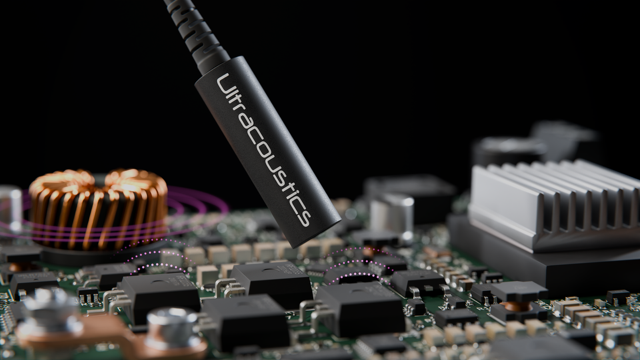
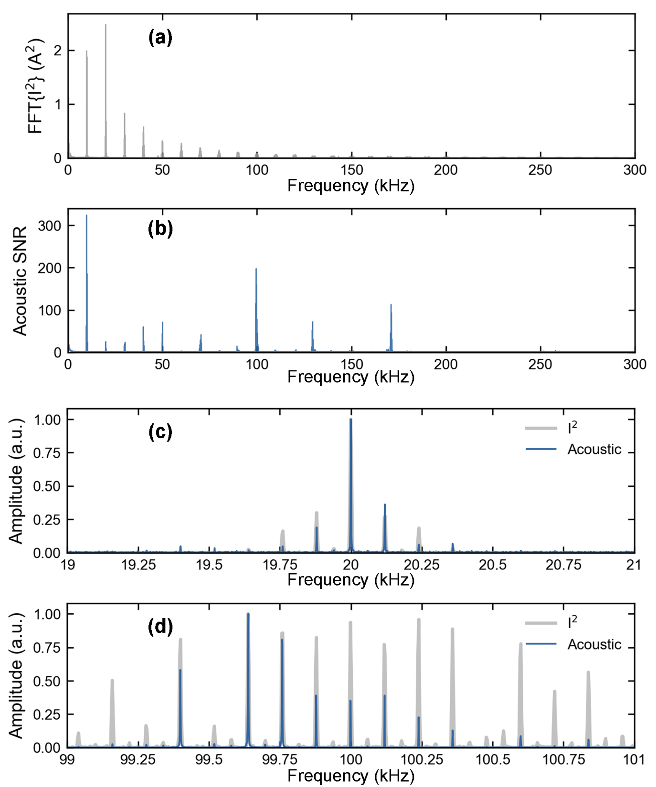
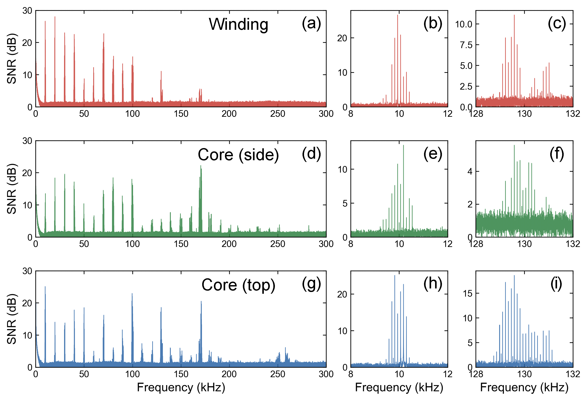

Compare components
Compare acoustic signatures from inductors, transformers, and board-mounted components. Investigate differences in peak amplitudes and resonance features between units or design revisions.
Electrical Measurements
Measure the mechanical response of operating electronics through airborne ultrasound. BROADSONIC brings non-contact acoustic insight to component characterization and QA/QC.
Power-magnetics research presented at IEEE ECCE 2026.

A Mechanical View
Electrical components vibrate as they operate. Their airborne acoustic emissions carry information about switching harmonics, mechanical resonances, and the way their structure responds to excitation.
BROADSONIC records those emissions without attaching a sensor to the component. Its optical sensing head provides electrical isolation and inherent immunity to electromagnetic interference.
Voltage, current, and magnetic-field measurements describe the electrical excitation. Acoustic measurements add a view of the resulting mechanical response, helping you investigate features those measurements alone do not directly reveal.
Operating current drives the component.
In power magnetics, excitation acts on the core and windings.
Structure and resonances shape the vibration.
BROADSONIC records the emitted acoustic signature.
Characterization & QA/QC
Capture spectra, compare resonance features, and establish repeatable acoustic references using the commercial BROADSONIC system.
Compare acoustic signatures from inductors, transformers, and board-mounted components. Investigate differences in peak amplitudes and resonance features between units or design revisions.
Measure how emissions change with load, switching settings, and excitation. Relate the acoustic spectrum to the electrical behavior of your converter or power-supply board.
Record a known reference under controlled conditions, then compare production or repaired units. Use spectral differences to guide further inspection and develop application-specific QA criteria.
Meaningful comparisons use repeatable excitation, loading, probe position, and acquisition settings.
Evidence from IEEE ECCE 2026
Our research with the University of Alberta compared a filter inductor’s airborne ultrasound with its squared-current spectrum. The results connect electrical excitation to measured mechanical behavior.
The presentation reports detectable harmonics up to approximately 260 kHz in this converter test. The sensor bandwidth extends to 5 MHz.
Sidebands around the 20 kHz and 100 kHz harmonics reveal modulation associated with the 60 Hz electrical output.
Stable harmonic signatures provided a healthy reference for investigating changes in subsequent measurements.

The measured acoustic peaks follow the harmonic structure predicted by the squared inductor current. This is consistent with the magnetic-force model used in the study.
Acoustic amplitudes do not simply copy the electrical spectrum. The component’s mechanical-acoustic response shapes them, including a strong response near 100 kHz.
Measurements near the winding, core side, and core top share harmonic structure but differ in amplitude. Probe placement is therefore part of the measurement method, especially when comparing units.

These results characterize a healthy converter under steady-state conditions. Fault-specific diagnosis and automated pass/fail thresholds require validation against the components and failure modes of interest.
Research reference: B. Li, T. Senavirathna, K. Scheuer, R. DeCorby, and G. Kish, “Non-Contact Acoustic Vibration Measurement of Power Magnetic Components Using an Optical Ultrasonic Microphone.” IEEE Energy Conversion Congress and Exposition, 2026, paper #2009, oral Session 61. Results above draw on the conference presentation, slides 7–13.
View the conference program (PDF) · Read the magnetic-components application note (PDF)
Planning a Measurement
BROADSONIC measures airborne acoustic pressure from component vibration. Use it alongside voltage, current, or magnetic-field measurements to understand how electrical excitation translates into mechanical behavior.
No. The optical probe receives sound through air. The ECCE experiment used approximately 1 cm standoff; suitable placement depends on the component, frequency range, acoustic access, and test conditions. No reflective target surface or attached accelerometer is required.
The commercial system can record and compare component emissions, spectra, and resonance features. A repeatable fixture and reference samples support those comparisons. Automated acceptance thresholds or diagnosis of a particular defect need to be developed and validated for your application.
We have demonstrated acoustic mapping of transducers. Integrating scanning and production-test fixtures into circuit-board and power-equipment QA/QC is a next development step. Explore our transducer characterization work.
Continue the ECCE Conversation
Tell us about your component, operating conditions, and the differences you need to resolve. We’ll help you plan an acoustic measurement and assess where BROADSONIC fits into your test process.